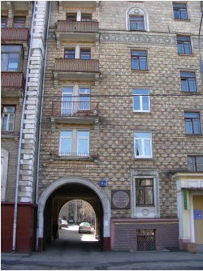
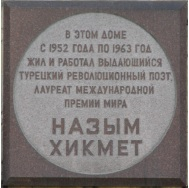

Nâzım Hikmet ve Vera Tulyakova’nın Moskova’daki dairelerinin
bulunduğu bina ve binanın girişindeki granit plaket.
(ÜNLÜ DEVRİMCİ TÜRK ŞAİRİ VE
ULUSLARARASI BARIŞ ÖDÜLÜ SAHİBİ NÂZIM HİKMET,
1952-1963 YILLARI ARASINDA BURADA YAŞAMIŞTIR)